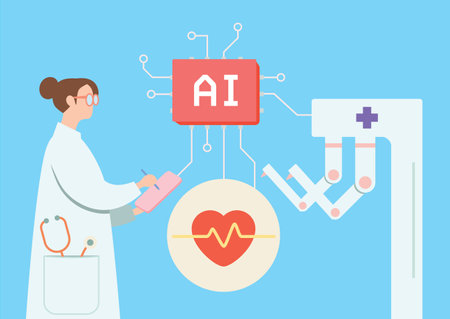

How AI Benefits Society: Convenience and Efficiency
AI no doubt has benefited society in many aspects. Among all, one great advantage it may bring is an enhancement in efficiency. AI algorithms are used to predict consumer behavior, optimize supply chains, and provide recommendations to support business decision making. In medicine, AI-driven diagnostic tools have helped doctors detect diseases like cancer much earlier than otherwise possible, while the disease was still at a fairly treatable stage. Personalized treatment plans are under development with the use of machine learning. AI also helps add convenience to our daily lives. Applications like Siri and Google Assistant, through voice-operated gadgets, make communication between people and gadgets in their homes and cars easier. The application of AI to cars could even minimize road accidents, control the flow of traffic, and optimize travel modes that are more fuel efficient. Overall, AI can make life easier and even save lives, so there are definitely many positives.
